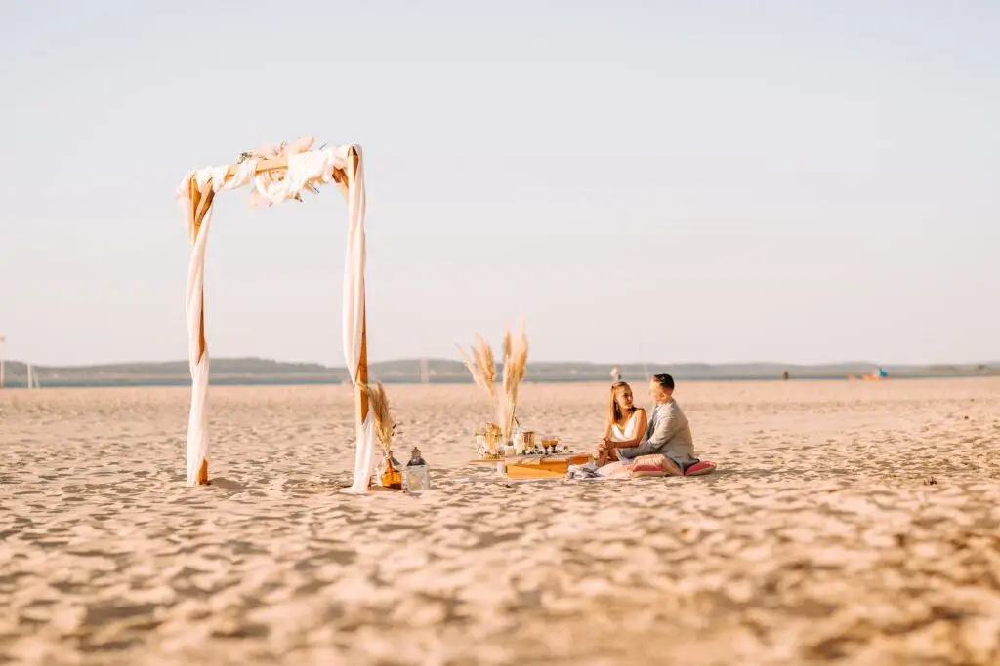
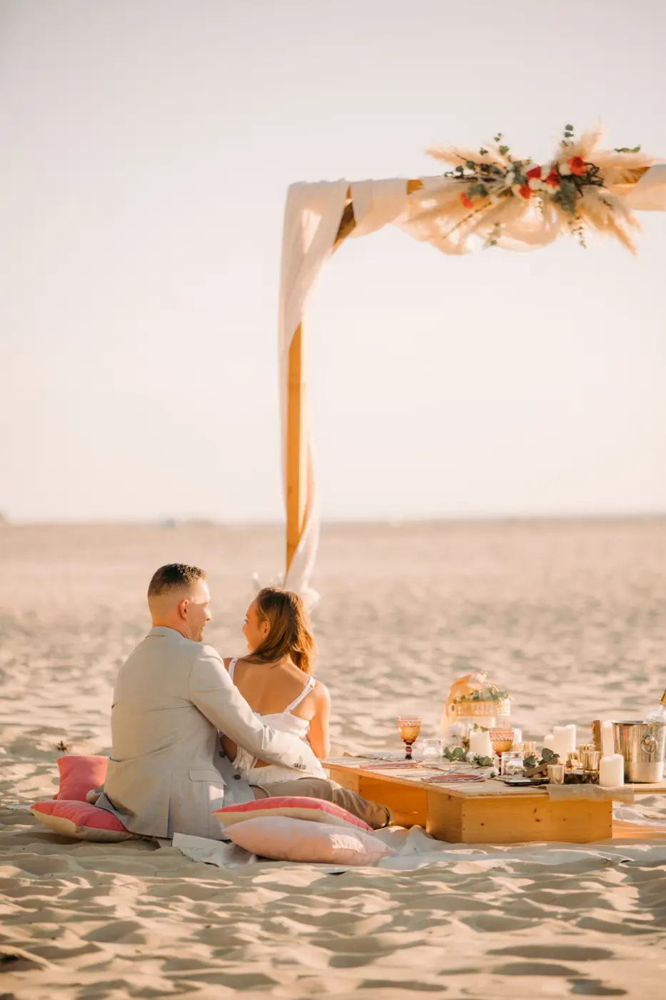
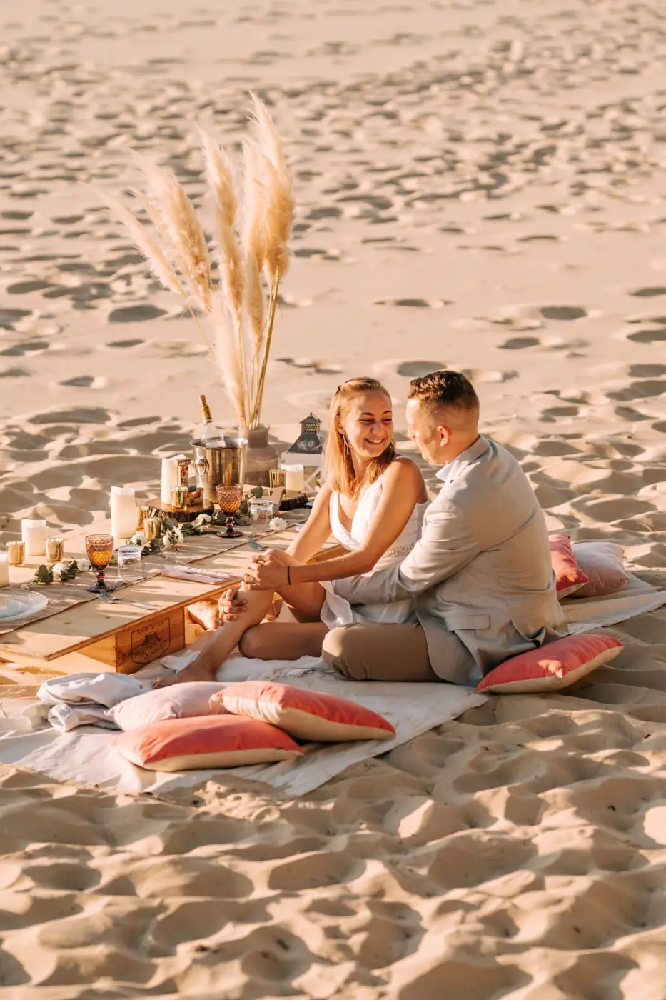

A personalised marriage proposal
You'd like to create a surprise and make your marriage proposal with a stunning ring in its box. As a wedding planner in the Bordeaux region, I'll help you organise your proposal. Calling on a wedding professional is a wonderful idea!

It's a big step, leading to a new beginning together.
I'll find the most beautiful setting for your couple, whether chic, rustic, boho, elegant or retro: one that reflects what your heart feels for your other half, your beloved, so you can make your declaration from A to Z without stress!
A day of love for two, a boat trip, a place that speaks to you both: these are ideas you might like for your proposal in the Bordeaux region. It will be tailor-made for you, in a romantic atmosphere where you can seal your commitment with style, and everything will be perfect.

My agency, Lovely Day Event, offers various services bringing organisation, creativity and romance to this day. This emotional moment can be the start of your preparations in the Bordeaux region, ahead of an intimate wedding that will delight your beloved. I'd be happy to put my skills at your service.
Tell me about your future spouse, and together we'll plan a precious moment they'll remember for ever!







Lovely Day Event offers several services
Wedding planning
I step in at every stage of your preparations and guide you through your choices, bringing ideas and suggestions so that your wedding looks like no one but you.
Wedding design
Creative and passionate, I am a certified Wedding Designer and I create a scenographic atmosphere that matches the theme of your wedding.
On-the-day coordination
I will be the conductor of your day, managing the suppliers, the set-up of your decor and the smooth running of this beautiful day.